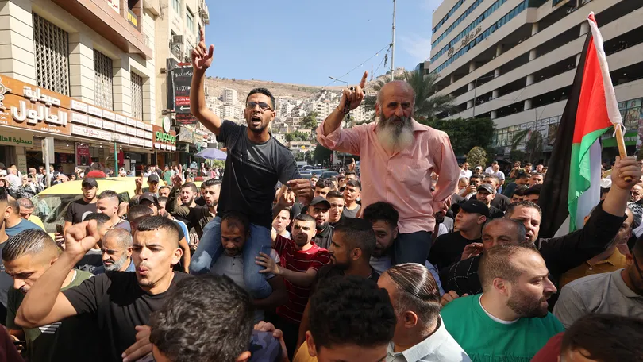
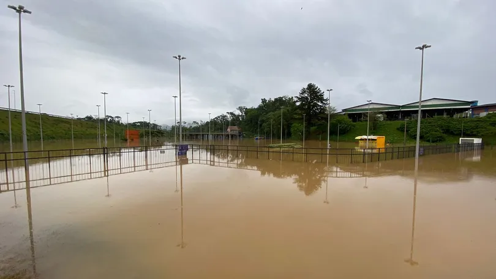

Guerra Entre Israel e Hamas.
Atualizado em: 08/10/2023.

Entenda a diferença entre israelenses, palestinos e o Hamas
Conflito entre Israel e o Hamas deixou dezenas de mortos e centenas de feridos entre sábado (7) e este domingo (8). Impasse entre grupos dura décadas e envolve disputa por território.

Após suspender a Oktoberfest, Blumenau decreta situação de emergência por causa das chuvas
Há 107 desabrigados na cidade, segundo a Defesa Civil. Aulas foram canceladas, e o transporte coletivo está suspenso neste domingo (8).